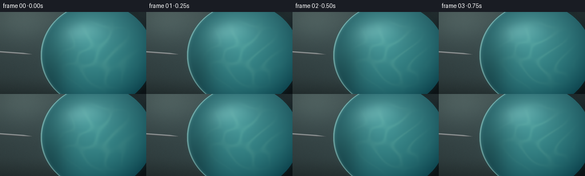
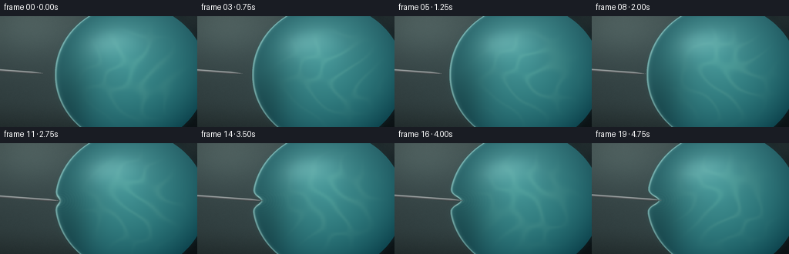
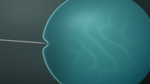
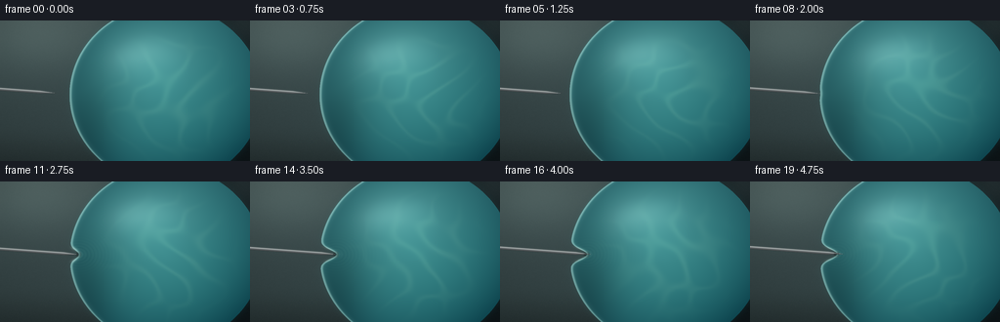
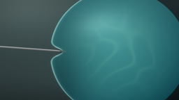

CODING AGENTS AS PIXEL WORLD MODELS
traex/DeepSeek-V4.1-Flash · phygen_024
点击播放 · 原生 RGB 像素
逐轮保存的候选
回放视频、检查图与代码变化。
每份候选均可单独播放。实际图片检查记录在下方工具轨迹中。
候选 01播放与检查图
点击播放 · 原生 RGB 像素


展开代码变化
--- 上一保存版本 +++ 本次保存版本 @@ -0,0 +1,243 @@ +"""Procedural close-up of a pin slowly piercing a water-filled balloon.""" + +from pathlib import Path + +import numpy as np +from PIL import Image +from scipy.ndimage import gaussian_filter + +import artifact_io + + +CASE_DIR = Path(__file__).resolve().parent +W, H, N, FPS = 256, 144, 20, 4.0 +SS = 3 + + +def smoothstep(edge0, edge1, value): + x = np.clip((value - edge0) / (edge1 - edge0), 0.0, 1.0) + return x * x * (3.0 - 2.0 * x) + + +def soft_circle(x, y, cx, cy, radius, feather): + dist = np.hypot(x - cx, y - cy) + return 1.0 - smoothstep(radius - feather, radius + feather, dist) + + +def background(width, height, frame): + yy, xx = np.mgrid[0:height, 0:width].astype(np.float32) + u = xx / width + v = yy / height + + top = np.array([38, 52, 56], dtype=np.float32) + bottom = np.array([12, 22, 27], dtype=np.float32) + color = top[None, None, :] * (1.0 - v[..., None]) + bottom[None, None, :] * v[..., None] + color *= (0.91 + 0.11 * (1.0 - u))[..., None] + + # Soft, defocused studio lights behind the balloon. + glow = np.zeros((height, width), dtype=np.float32) + lights = [ + (0.14, 0.10, 0.19, 0.48), + (0.72, 0.12, 0.22, 0.30), + (0.92, 0.61, 0.16, 0.18), + (0.38, 0.84, 0.22, 0.12), + ] + for cx, cy, radius, power in lights: + dist = np.hypot((u - cx) * 1.15, v - cy) + glow += power * np.exp(-0.5 * (dist / radius) ** 2) + + glow = gaussian_filter(glow, sigma=width * 0.018) + warm = np.array([176, 165, 132], dtype=np.float32) + cool = np.array([103, 174, 173], dtype=np.float32) + light_color = cool[None, None, :] * 0.58 + warm[None, None, :] * (0.42 * (1.0 - v[..., None])) + color += glow[..., None] * light_color * 0.42 + + # A faint surface plane grounds the balloon without making a hard horizon. + table = smoothstep(0.71, 0.98, v) + color = color * (1.0 - 0.19 * table[..., None]) + np.array([31, 34, 31]) * (0.19 * table[..., None]) + + vignette = np.clip(1.0 - 0.45 * ((u - 0.5) ** 2 + (v - 0.49) ** 2), 0.58, 1.0) + color *= vignette[..., None] + + rng = np.random.default_rng(81) + grain = rng.normal(0.0, 1.65, (height, width, 1)).astype(np.float32) + color += gaussian_filter(grain, sigma=(0.55, 0.55, 0)) + return color + + +def balloon_geometry(x, y, tip_x, tip_y): + cx, cy = 169.5, 76.0 + rx, ry = 98.5, 91.5 + + vertical = np.clip(1.0 - ((y - cy) / ry) ** 2, 0.0, 1.0) + base_left = cx - rx * np.sqrt(vertical) + penetration = np.maximum(0.0, tip_x - base_left) + + # The pin first stretches the skin, then slips through it. The dimple lags + # slightly behind the point so the final frames show actual penetration. + dimple_depth = np.minimum(15.0, 0.78 * penetration) + dimple_width = 4.4 + 0.075 * dimple_depth + dimple = dimple_depth * np.exp(-0.5 * ((y - tip_y) / dimple_width) ** 2) + left = base_left + dimple + return cx, cy, rx, ry, base_left, left, penetration, dimple_depth + + +def render_frame(index): + width, height = W * SS, H * SS + yy, xx = np.mgrid[0:height, 0:width].astype(np.float32) + x = xx / SS + y = yy / SS + + t = index / (N - 1) + travel = t * t * (3.0 - 2.0 * t) + tip_x = 57.0 + 34.5 * travel + tip_y = 74.2 + 0.55 * np.sin(np.pi * t) + + color = background(width, height, index) + + cx, cy, rx, ry, base_left, left, penetration, dimple_depth = balloon_geometry( + x, y, tip_x, tip_y + ) + inside_vertical = np.abs(y - cy) <= ry + right = cx + rx * np.sqrt(np.clip(1.0 - ((y - cy) / ry) ** 2, 0.0, 1.0)) + balloon = ((x >= left) & (x <= right) & inside_vertical).astype(np.float32) + balloon = smoothstep(0.12, 0.88, gaussian_filter(balloon, 0.55)) + + # Cast shadow beneath and to the right of the balloon. + shadow_source = ((x >= left + 2.2) & (x <= right + 4.0) & inside_vertical).astype(np.float32) + shadow = gaussian_filter(shadow_source, 7.5 * SS) + shadow = np.clip(shadow * 1.18 - 0.10, 0.0, 1.0) + shadow_color = np.array([5, 12, 15], dtype=np.float32) + color = color * (1.0 - 0.42 * shadow[..., None]) + shadow_color * (0.42 * shadow[..., None]) + + # Halo / transmitted light around the elastic skin. + halo = gaussian_filter(balloon, 4.0 * SS) + halo = np.clip(halo - balloon * 0.45, 0.0, 1.0) + color += np.array([31, 88, 89], dtype=np.float32) * (0.20 * halo[..., None]) + + px = (x - cx) / rx + py = (y - cy) / ry + radial = np.clip(np.sqrt(px * px + py * py), 0.0, 1.0) + + # Water body: cool center, darker refracted edges, and a soft window light. + deep = np.array([12, 72, 85], dtype=np.float32) + middle = np.array([40, 145, 151], dtype=np.float32) + bright = np.array([137, 220, 205], dtype=np.float32) + mix = np.clip(1.0 - radial ** 1.55, 0.0, 1.0) + water = deep[None, None, :] * (1.0 - mix[..., None]) + middle[None, None, :] * mix[..., None] + + diagonal = np.clip((0.12 + 0.56 * (1.0 - py) - px * 0.34), 0.0, 1.0) + window = np.exp(-0.5 * ((px + 0.22) / 0.34) ** 2 - 0.5 * ((py + 0.44) / 0.25) ** 2) + water += bright[None, None, :] * (0.23 * diagonal[..., None] + 0.18 * window[..., None]) + + phase = 0.25 * index + caustic_a = np.sin(9.8 * px + 2.5 * np.sin(5.0 * py + phase)) + caustic_b = np.sin(12.4 * py - 3.1 * np.cos(4.1 * px - 0.7 * phase)) + caustic_c = np.sin(7.0 * (px + py) + 2.0 * np.sin(3.2 * (px - py) + phase)) + caustic_field = caustic_a + 0.72 * caustic_b + 0.45 * caustic_c + caustics = np.exp(-3.7 * caustic_field ** 2) + caustics *= smoothstep(0.15, 0.8, 1.0 - radial) + caustics *= 0.64 + 0.36 * smoothstep(-0.55, 0.3, px) + water += np.array([74, 99, 60], dtype=np.float32) * (0.19 * caustics[..., None]) + + # Water displaced by the approaching point: a small train of refracted rings. + if penetration.max() > 0.0: + ripple_strength = smoothstep(0.0, 7.0, dimple_depth) * (0.75 + 0.25 * np.sin(phase)) + ripple_r = np.hypot((x - (base_left + dimple_depth)) * 1.0, (y - tip_y) * 1.25) + rings = np.sin(ripple_r * 1.75 - 1.6 * index) * np.exp(-ripple_r / 20.0) + rings *= np.exp(-((y - tip_y) / 18.0) ** 2) + water += np.array([68, 99, 76], dtype=np.float32) * ( + 0.085 * ripple_strength[..., None] * rings[..., None] + ) + + # Contact shadow and reflected teal around the lower-left edge. + lower_shadow = np.exp(-0.5 * ((px + 0.82) / 0.24) ** 2 - 0.5 * ((py - 0.35) / 0.52) ** 2) + water *= 1.0 - 0.28 * lower_shadow[..., None] + + color = color * (1.0 - balloon[..., None]) + water * balloon[..., None] + + # A thin translucent skin with a crisp, pearly Fresnel rim. + edge_dist = np.maximum(0.0, x - left) + rim = np.exp(-0.5 * ((edge_dist - 1.0) / 0.95) ** 2) + inner_skin = np.exp(-0.5 * ((edge_dist - 3.1) / 2.2) ** 2) + skin_tint = np.array([152, 226, 207], dtype=np.float32) + color += skin_tint * (0.30 * rim[..., None] + 0.055 * inner_skin[..., None]) * balloon[..., None] + + rim_mod = 0.68 + 0.45 * smoothstep(0.12, 0.68, 1.0 - py) + color += np.array([205, 244, 225], dtype=np.float32) * (0.24 * rim[..., None] * rim_mod[..., None]) + + # Broad satin highlight across the upper-left shoulder. + shoulder = np.exp(-0.5 * ((px + 0.37) / 0.28) ** 2 - 0.5 * ((py + 0.48) / 0.13) ** 2) + shoulder *= smoothstep(0.08, 0.5, 1.0 - radial) + color += np.array([223, 250, 229], dtype=np.float32) * (0.12 * shoulder[..., None] * balloon[..., None]) + + # Needle geometry, viewed almost side-on. + slope = 0.073 + axis_y = tip_y - slope * (tip_x - x) + perp = (y - axis_y) / np.sqrt(1.0 + slope * slope) + shaft_radius = 1.55 + cone_length = 16.0 + cone_fraction = np.clip((tip_x - x) / cone_length, 0.0, 1.0) + radius = shaft_radius * np.maximum(cone_fraction, 0.06) + radius = np.where(x > tip_x - cone_length, radius, shaft_radius) + pin_shape = (x <= tip_x) & (np.abs(perp) <= radius) + pin_alpha = smoothstep(radius + 0.32, radius - 0.32, np.abs(perp)) + pin_alpha *= smoothstep(tip_x + 0.20, tip_x - 0.32, x) + pin_alpha *= (x > -8.0) + + pin_shadow = gaussian_filter( + (np.abs(perp - 2.4) <= radius * 1.15).astype(np.float32) + * (x <= tip_x) + * (x > -8.0), + 1.4 * SS, + ) + pin_shadow *= balloon * 0.36 + color *= 1.0 - 0.42 * pin_shadow[..., None] + + q = np.clip(perp / np.maximum(radius, 0.08), -1.0, 1.0) + diffuse = 0.38 + 0.55 * np.sqrt(np.clip(1.0 - q * q, 0.0, 1.0)) + highlight = np.exp(-0.5 * ((q + 0.43) / 0.16) ** 2) + dark_edge = np.exp(-0.5 * ((q - 0.68) / 0.20) ** 2) + steel = np.array([135, 145, 149], dtype=np.float32) + pin_rgb = steel[None, None, :] * diffuse[..., None] + pin_rgb += np.array([236, 242, 231], dtype=np.float32) * (0.68 * highlight[..., None]) + pin_rgb -= np.array([35, 45, 48], dtype=np.float32) * (0.44 * dark_edge[..., None]) + pin_rgb += np.array([107, 160, 157], dtype=np.float32) * ( + 0.18 * np.clip(-q, 0.0, 1.0)[..., None] + ) + color = color * (1.0 - pin_alpha[..., None]) + pin_rgb * pin_alpha[..., None] + + # Stretched-skin highlights around the dent and a small puncture crease. + if penetration.max() > 0.25: + stress = smoothstep(0.25, 5.5, dimple_depth) + side_offsets = np.abs(y - tip_y) + stress_arc = np.exp(-0.5 * ((side_offsets - 5.3) / 1.55) ** 2) + stress_arc *= np.exp(-0.5 * ((x - (left + 1.0)) / 1.5) ** 2) + color += np.array([205, 247, 224], dtype=np.float32) * ( + 0.22 * stress[..., None] * stress_arc[..., None] + ) + + puncture = smoothstep(1.2, 8.0, penetration) + crease = np.exp(-0.5 * ((x - (base_left + dimple_depth + 0.6)) / 1.15) ** 2) + crease *= np.exp(-0.5 * ((y - tip_y) / 1.05) ** 2) + color *= 1.0 - 0.32 * puncture[..., None] * crease[..., None] + + # Slight exposure bloom and filmic shoulder. + bloom_source = np.clip((color - 182.0) / 73.0, 0.0, 1.0) + bloom = gaussian_filter(bloom_source, (1.1 * SS, 1.1 * SS, 0)) + color += 0.10 * bloom * np.array([240, 255, 238], dtype=np.float32) + color = 255.0 * (1.0 - np.exp(-np.maximum(color, 0.0) / 235.0)) + + small = Image.fromarray(np.clip(color, 0, 255).astype(np.uint8)).resize( + (W, H), Image.Resampling.LANCZOS + ) + return np.asarray(small, dtype=np.uint8) + + +def main(): + frames = np.stack([render_frame(index) for index in range(N)]) + artifact_io.save(frames, CASE_DIR) + + +if __name__ == "__main__": + main()
候选 02播放与检查图
点击播放 · 原生 RGB 像素

展开代码变化
--- 上一保存版本
+++ 本次保存版本
@@ -75,8 +75,8 @@
# The pin first stretches the skin, then slips through it. The dimple lags
# slightly behind the point so the final frames show actual penetration.
- dimple_depth = np.minimum(15.0, 0.78 * penetration)
- dimple_width = 4.4 + 0.075 * dimple_depth
+ dimple_depth = np.minimum(17.5, 0.92 * penetration)
+ dimple_width = 3.7 + 0.085 * dimple_depth
dimple = dimple_depth * np.exp(-0.5 * ((y - tip_y) / dimple_width) ** 2)
left = base_left + dimple
return cx, cy, rx, ry, base_left, left, penetration, dimple_depth
@@ -90,7 +90,7 @@
t = index / (N - 1)
travel = t * t * (3.0 - 2.0 * t)
- tip_x = 57.0 + 34.5 * travel
+ tip_x = 57.0 + 39.0 * travel
tip_y = 74.2 + 0.55 * np.sin(np.pi * t)
color = background(width, height, index)
@@ -211,16 +211,25 @@
if penetration.max() > 0.25:
stress = smoothstep(0.25, 5.5, dimple_depth)
side_offsets = np.abs(y - tip_y)
- stress_arc = np.exp(-0.5 * ((side_offsets - 5.3) / 1.55) ** 2)
- stress_arc *= np.exp(-0.5 * ((x - (left + 1.0)) / 1.5) ** 2)
+ stress_arc = np.exp(-0.5 * ((side_offsets - 5.8) / 1.45) ** 2)
+ stress_arc *= np.exp(-0.5 * ((x - (left + 1.0)) / 1.8) ** 2)
color += np.array([205, 247, 224], dtype=np.float32) * (
- 0.22 * stress[..., None] * stress_arc[..., None]
+ 0.27 * stress[..., None] * stress_arc[..., None]
)
puncture = smoothstep(1.2, 8.0, penetration)
- crease = np.exp(-0.5 * ((x - (base_left + dimple_depth + 0.6)) / 1.15) ** 2)
- crease *= np.exp(-0.5 * ((y - tip_y) / 1.05) ** 2)
- color *= 1.0 - 0.32 * puncture[..., None] * crease[..., None]
+ crease = np.exp(-0.5 * ((x - (base_left + dimple_depth + 0.2)) / 1.35) ** 2)
+ crease *= np.exp(-0.5 * ((y - tip_y) / 1.35) ** 2)
+ color *= 1.0 - 0.40 * puncture[..., None] * crease[..., None]
+
+ # A dark elastic lip surrounds the entry and catches a thin white edge.
+ entry_r = np.hypot((x - (base_left + dimple_depth)) * 1.15, y - tip_y)
+ lip = np.exp(-0.5 * ((entry_r - 2.4) / 0.72) ** 2)
+ lip *= smoothstep(4.0, 11.0, penetration)
+ color *= 1.0 - 0.24 * lip[..., None]
+ color += np.array([222, 251, 229], dtype=np.float32) * (
+ 0.16 * lip[..., None] * smoothstep(0.1, 1.0, np.abs(y - tip_y) / 4.0)[..., None]
+ )
# Slight exposure bloom and filmic shoulder.
bloom_source = np.clip((color - 182.0) / 73.0, 0.0, 1.0)
可观测工具轨迹
实际执行的命令与返回图片。
命令 1exit 0
/bin/bash -lc "pwd && rg --files -g '"'!*__pycache__*'"' -g '"'!*.pyc'"' | sed -n '1,120p'"
命令 2exit 0
/bin/bash -lc "sed -n '1,240p' GENERATION_RULES.md"
命令 3exit 0
/bin/bash -lc "cat task_spec.json && printf '\\n--- prompt.txt ---\\n' && cat prompt.txt"
命令 4exit 0
/bin/bash -lc "find . -maxdepth 2 -type f -printf '%p\\n' | sort | sed -n '1,200p'"
命令 5exit 0
/bin/bash -lc "sed -n '1,260p' artifact_io.py"
命令 6exit 0
/bin/bash -lc "sed -n '1,220p' player_template.html"
命令 7exit 0
/bin/bash -lc "python - <<'PY' import importlib.util for m in ['numpy','PIL','scipy','cv2','imageio','matplotlib']: print(m, bool(importlib.util.find_spec(m))) PY"
命令 8exit 1
/bin/bash -lc 'python generate.py'
命令 9exit 1
/bin/bash -lc 'python generate.py'
命令 10exit 0
/bin/bash -lc 'python generate.py'
命令 11exit 0
/bin/bash -lc 'python generate.py'
命令 12exit 0
/bin/bash -lc "ls -lh pixels.npz index.html frames/00.png frames/19.png && python - <<'PY'
import numpy as np
from pathlib import Path
z=np.load('pixels.npz')['pixels']
print('packed shape:', z.shape, 'dtype:', z.dtype)
frames=[]
for i in range(z.shape[2]):
v=z[:,:,i]
frames.append(np.stack([(v>>16)&255,(v>>8)&255,v&255],axis=-1))
a=np.stack(frames).astype(np.float32)
d=np.abs(np.diff(a,axis=0))
print('frame-to-frame mean abs diff:', [round(float(x),3) for x in d.mean(axis=(1,2,3))])
print('nonblack frame means:', [round(float(x),2) for x in a.mean(axis=(1,2,3))])
print('unique colors frame 19:', len(np.unique(frames[-1].reshape(-1,3),axis=0)))
PY"命令 13exit 0
/bin/bash -lc "python - <<'PY'
from PIL import Image
im=Image.open('frames/19.png')
im.resize((1024,576), Image.Resampling.NEAREST).save('.tmp/frame19_4x.png')
PY"命令 14exit 0
/bin/bash -lc "python - <<'PY'
from pathlib import Path
import json, re
p=Path('.')
expected=[p/'generate.py', p/'pixels.npz', p/'index.html', p/'inspection.png', p/'transition_check.png']
for x in expected:
print(x, x.exists(), x.stat().st_size if x.exists() else '-')
print('frame pngs:', len(list((p/'frames').glob('*.png'))))
html=(p/'index.html').read_text()
print('player payload present:', 'const DATA={' in html and 'window.__pixelReady=true' in html)
spec=json.loads((p/'task_spec.json').read_text())
print('spec:', spec)
PY
sha256sum pixels.npz index.html | cut -c1-16,67-"命令 15exit 0
/bin/bash -lc 'git status --short 2>/dev/null || true'
视觉工具实际返回图片 1

视觉工具实际返回图片 2

视觉工具实际返回图片 3
视觉工具实际返回图片 4

视觉工具实际返回图片 5

视觉工具实际返回图片 6
保存候选 2 份；完成命令 15 次；可验证图片返回 6 张。原始 API 响应与完整日志保留在本地。